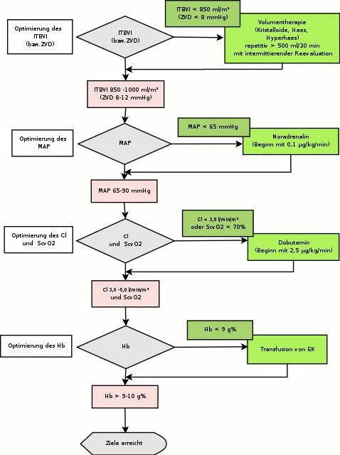

Therapeutische Hypothermie
nach kardiopulmonaler und zerebraler Reanimation
gültig für die Intensivstation des KKH Bergstrasse Heppenheim
in Anlehnung an SOP von: Prof. Fischer, Dr.Martin, Dr. Hanel, Dr. Roth Doku. Nr.: IS026.00 Art: Gültig bis: 01.05.07 gez.:Rieß
Indikation
| - Koma und stabile Kreislaufverhältnisse nach
kardiopulmonaler Reanimation
- Patienten sollten nicht an einer terminalen Erkrankung leiden - Eine bestätigte Patientenverfügung mit Verzicht auf intensivmedizinische Prozeduren schliesst therapeutische Hypothermie aus - Invasive Prozeduren (PTCA, Stent) schliessen die Induktion der Hypothermie nicht aus (s. unten) |
Zieltemperatur
32 - 34°C für 24 h.Technik der Kühlung
Induktion
Die Induktion der Kühlung erfolgt mittels der Infusion von 4°C kalter Ringer-Lösung in einer Dosierung von 20 - 30 ml/kgKG über einen Zeitraum von 1 - 3 h [6].Diese Technik kann und sollte im Notarztdienst begonnen werden [7] (s. SOP Reanimationsrichtlinien). War dies der Fall, sind die infundierten Flüssigkeitsmengen entsprechend zu berücksichtigen.
Mit dieser Technik ist die Induktion der Hypothermie in <2 h möglich und anzustreben.
Aufrechterhaltung
Zieltemperatur ist 33°C Körperkerntemperatur (Blase, Blut,Rektum). Die Aufrechterhaltung der Kühlung erfolgt mit Oberflächenkühlung ("cold touch" und "cool packs"; Vorsicht mit alkoholischen Lösungen, Verbrennung bei Defibrillation) oder ggf. mit weiteren Infusionen 4°C kalter Lösungen/Transfusionen.Wiedererwärmung
Die Wiedererwärmung erfolgt nach 24 h, sie sollte passiv erfolgen und eine Wiedererwärmungsrate von 0,5°C/h nicht überschreiten.Wenn die Temperatur >35°C erreicht, werden Analgosedierung und Muskelrelaxation beendet.
Normothermie nach Wiedererwärmung
Auch nach den 24 h aktiver Kühlung soll die Temperatur maximal 37°C bleiben.Hierzu kommen folgende Massnahmen zum Einsatz:
| - Jede Wärmezufuhr stoppen
- Medikamente (Metamizol, Perfalgan, Diclofenac) - Gegebenenfalls aktive Kühlung |
Temperaturmessung
| - Blasenkatheter / Rektalsonde
- Bluttemperatur via PICCO oder Pulmonaliskatheter - Nasopharyngeal/ösophageal |
Weitere Massnahmen
Monitoring und Optimierung der Hämodynamik
| - Arterielle und zentralvenöse Druckmessung; EKG,
Diurese,(PICCO), ScvSO2
- Optimierung des Kreislaufs innerhalb von maximal 6 h (Füllung des Herzens, peripherer Widerstand, Herzminutenvolumen, Transfusion; "early goal directed therapy" [8], Algorithmus in Abb. 1) - CPP mindestens 70 mmHg |

Abb. 1. Algorithmus zur Optimierung der Hämodynamik. (Nach [8])
Analgosedierung und Muskelrelaxierung
| - Nach SOP
Analgosedierung (Gaass -400 oder Ramsay 4 - 5)
- Propofol, Remifentanil (Sufentanil) |
Beatmung
| - Beatmung mit den Zielen: SaO2 >95%; paO2 100 -
150 mmHg
- paCO2 40 - 45 mmHg; pH 7,3 - 7,5 - Tidalvolumen 4 - 6 ml/kgKG, PEEP maximal 10 mmHg |
Ernährung und Homöostase
| - Flüssigkeitsbilanz: 50 ml/kgKG/24 h
- Serumglukose <110 mg/dl (ggf. Insulin) - HKT 30 - 45% - Ernährung: bis 48 h nach ROSC (return of spontaneous circiulation = Herstellung des Spontankreislaufs)keine Dextrose und hypotone Lösungen intravenös applizieren (Cave: Hirnödem) - Parenterale und enterale Ernährung so früh wie möglich beginnen |
Elektrolyte, Labor und Blutgase
Laborkontrollen 6, 12, 24, 36, 48 Stunden nach Herstellung des Spontankreislaufs
| - Blutgase bei Raumtemperatur
- Na, K, Cl, Ca - BZ - Laktat - Kreatinin, Harnstoff - CK, CPK, Troponin-I - CRP - PTZ, PTT - Hb, HKT, Leuko |
Elektrolyte und Blutgase im Normbereich halten
Intrakranieller Druck
| - Messung des ICP in der Regel nicht erforderlich
- 30° Oberkörperhochlage in Neutralposition, wenn CCP >70 mmHg - Vorsicht bei Kopfbewegungen |
Hirntod, Therapiereduktion
| - Hirntoddiagnostik entsprechend SOP
- Maximaltherapie bei allen Patienten für mindestens 3 Tage, mit der Ausnahme: Hirntod - Die Therapie ist aufrecht zu halten für 7 Tage, wenn eine motorische Antwort auf Schmerzreiz vorhanden ist |
Nebenwirkung und Komplikationen der Hypothermie
|
Tägliche Überwachung auf mögliche Komplikationen:
- Pneumonie
|
PTCA
Indikation für interventionelle kardiologische Verfahren bei komatösen Patienten nach primär erfolgreicher Wiederbelebung:War die auslösende Ursache für die kardiopulmonale Reanimation ein Herzinfarkt, welcher eine Kausaltherapie im Sinne eine PTCA-Intervention erfordert, so wird der Patient unter Fortführung der Hypothermie im Herzkatheterlabor behandelt.
Es hat sich erwiesen,dass dieses Verfahren im angestrebten Temperaturbereich von 32 - 34°C komplikationslos durchgeführt werden kann [9].
Offensichtliche Zeichen eines akuten Koronarsyndroms
|
∗ EKG mit mindestens einem der folgenden
Risikobefunde:
- >2 mm ST-Hebung in mindestens 2 benachbarten
Vorderwandableitungen
- Hypotension: RRsys <80 mmHg oder exzessive
Dosen von Katecholaminen
innerhalb von 60 min nach ROSC vor Kühlung entwickeln. |
Hintergrund
Tierexperimente belegen schon seit über 10 Jahren den zerebroprotektiven Effekt der Hypothermie nach Herz-Kreislauf-Stillstand, Hypoxie und anderen Noxen. Eindrucksvolle Kasuistiken von akzidenteller Hypothermie, z. B. kindliche Ertrinkungsunfälle, wiesen immer wieder auf den Nutzen der Unterkühlung beim Herz-Kreislauf-Stillstand hin.Dass nicht nur die sofortige Kühlung, z. B. beim Einbruch ins Eis, einen schützenden Effekt auf den Hirnstoffwechsel und die Integrität der Zelle hat, sondern auch die erst auf der Intensivstation begonnene therapeutische Hypothermie, hat die Europäische Multizenterstudie (Hypothermia after Cardiac Arrest Study Group, HACA) unter Leitung von Sterz u. Holzer (Wien) eindrucksvoll belegt [1]:
Es wurden 137 Patienten für 24 h unter Muskelrelaxation und Narkose auf 33±1°C gekühlt. Die Verbesserung des Outcomes ohne wesentliches neurologisches Defizit ("cerebral performance categories" 1-2 nach 6 Monaten) von 39% auf 55% nach primär erfolgreicher Reanimation nach Kammerflimmern ist in ihrer Deutlichkeit überraschend.
Parallel zur Publikation der HACA-Studie hat die Arbeitsgruppe von Bernard in 4 Kliniken in Melbourne/Australien mit kleinerer Patientenzahl (n=77) ähnliche Ergebnisse - durch Oberflächenkählung begonnen schon im Rettungsdienst - erzielt und im selben Heft des New England Journal of Medicine publiziert [2].
Beiden Publikationen galt ein Editorial von Peter Safar, dem 2003 verstorbenen "Vater der Reanimationsforschung", in dem er im Februar 2002 zusammenfassend die milde Hypothermie nach erfolgreicher Wiederbelebung empfahl - "so früh wie möglich und für wenigstens 12 Stunden" [3].
Schon im Oktober 2002 hat die ALS-Task Force des
ILCOR-Gremiums die Konsequenzen aus den Veröffentlichungen
des New England Journal gezogen und im Vorgriff auf die
erst 2005 zu erwartenden neuen Reanimationsrichtlinien die
therapeutische Hypothermie empfohlen [4]:
"Bewusstlose Erwachsene mit Spontankreislauf nach
präklinischer Reanimation sollten auf 32-34°C für 12-24
Stunden gekühlt werden, wenn der Initialrhythmus
Kammerflimmern war. Diese Kühlung kann auch für andere
Initialrhythmen oder die innerklinische Reanimation von
Vorteil sein".
Wenn auch in den diesen beiden Studien nur die "guten" Reanimationspatienten eingeschlossen wurden (Alter <75 Jahre, Kammerflimmern), zeigen die ILCOR-Empfehlungen, die ersten Daten aus dem Hypothermieregister (http://www.erchacar.org) und Kasuistiken aus Finnland [5],
dass auch Patienten von dieser Therapie profitieren, die nicht im Kammerflimmern aufgefunden wurden.
Literatur
1. The Hypothermia after Cardiac Arrest Study Group (2002) Mild therapeutic hypothermia to improve neurologic outcome after cardiac arrest. N Engl J Med 346: 549-5562. Bernard SA, Gray TW, Buist MD, Jones BM, Silvester W, Gutteridge G, Smith l (2002) Treatment of comatose survivors of out-of-hospital cardiac arrest with induced hypothermia. N Engl J Med 346: 557-563
3. Safar PJ, Kochanek PM (2002) Therapeutic hypothermia after cardiac arrest (editorial). N Engl J Med 346: 612-613
4. Nolan JP, Morley PT, Hoeck TL Vanden, Hickey RW, ALS Task Force (2003) Therapeutic hypothermia after cardiac arrest. An advisory statement by the Advanced Life Support Task Force of the International Liaison Committee on Resuscitation. Resuscitation 57: 231-235 und Circulation 108: 118-121
5. Silvast T, Tiainen M, Poutiainen E, Roine RO (2003) Therapeutic hypothermia after prolonged cardiac arrest due to non-coronary causes. Resuscitation 57: 109-112
6. Bernard S, Buist M, Monteiro O, Smith K (2003) Induced hypothermia using large volume, ice-cold intravenous fluid in comatose survivors of out-of-hospital cardiac arrest: a preliminary report. Resuscitation 56: 9-13
7. Födisch MJ, Bartsch A (2003) Preclinical cooling treatment as early start of therapeutic hypothermia in out-of-hospital cardiac arrest. A Case Report. Crit Care Med 31, 12 (Suppl): A 64 8. Rivers E, Nguyen B, Havstad S, Ressler J, Muzzin A, Knoblich B, Peterson E, Tomlanovich M (2001) Early goal-directed therapy in the treatment of severe sepsis and septic shock. N Engl J Med 345: 1368-1377
9. Dixon SR, Whitbourn RJ, Dae MW, Grube E, Sherman W, Schaer GL, Jenkins JS, Baim DS, Gibbons RJ, Kuntz RE, Popma JJ, Nguyen TT, O'Neill WW (2002) Induction of mild systemic hypothermia with endovascular cooling during primary percutaneous coronary intervention for acute myocardial infarction. J Am Coll Cardiol 40 (11): 1928-1934